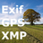
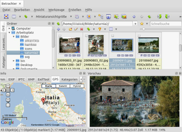

Geokodierung
Geokodierung oder Geotagging nennt man den Vorgang, der digitalen Fotos den Aufnahmeort hinzufügt. Obwohl immer mehr Kameras verfügbar sind, die Geodaten mittels eingebautem GPS-Chip direkt ermitteln und schreiben können, ist diese Funktion bei Digitalkameras im Gegensatz zu vielen Smartphones noch nicht weit verbreitet.
Für diejenigen, deren Kameras darauf vertrauen, dass sich der Benutzer erinnert, wo die Fotos aufgenommen wurden, bleiben zwei Möglichkeiten: entweder der Einsatz einer GPS-Maus (GPS-Logger, z.B. der Holux m241), um Ortsinformationen während des Fotografierens aufzuzeichnen (GPS-Track) oder die nachträgliche Verortung mittels einer Karte. Voraussetzung bei letzterer Variante ist allerdings eine Internetverbindung, da Kartenmaterial von OpenStreetMap oder Google Maps  benötigt wird.
benötigt wird.
Grundsätzlich werden diese Ortsinformationen ("Geotags") im Exif-Header (siehe Metadaten) untergebracht (eingebettet). Es gibt eine Reihe von Programmen, die in der Praxis weiterhelfen. Während manche Bildbetrachter zumindest vorhandene Geodaten anzeigen können (siehe Geodaten nutzen), nachfolgend zuerst eine alphabetische Liste von Programmen, die beim Erstellen einer Geokodierung weiterhelfen.
Grafische Programme¶
Aftershot Pro¶
Für das einzige kommerzielle Programm in dieser Auflistung, AfterShot Pro, gibt es die ebenfalls kommerzielle Erweiterung asGPS  .
.
Darktable¶
Der RAW-Konverter Darktable enthält ab Version 1.1 Funktionen zur Geokodierung. Neben dem Setzen und Anzeigen von Geodaten mittels einer Karte können auch GPS-Tracks genutzt werden (siehe Bessere Kamera-Unterstützung und Geotagging in Darktable 1.1 ).
digiKam¶
Die (sehr empfehlenswerte) Bildverwaltung digiKam kann Geodaten sowohl anzeigen als auch über eine kleine Karte nachträglich hinzufügen. Unterstützt GPS-Tracks.
Fotoxx¶
Das Bildbearbeitungsprogramm Fotoxx erlaubt wie DigiKam das Bearbeiten als auch die Anzeige der Geodaten auf einer Karte.
Geotag¶
Eines der ersten Programme, die eine nachträgliche Geokodierung ermöglichten. Da Geotag auf Java basiert, kann man es plattformübergreifend einsetzen. Geotag bietet viele Extras wie z.B. Informationen zur Höhe über N.N., die Blickrichtung oder Datenbankabfragen bei GeoNames zum Ermitteln von Ortsnamen. Praktisch sind Funktionen, um (vorhandene) Geodaten komfortabel auf weitere Bilder zu übertragen. Unterstützt GPS-Tracks.
GottenGeography¶
GottenGeography unterstützt – neben der üblichen Kartenansicht – ebenfalls die Nutzung von GPS-Tracks. Noch in aktiver Entwicklung, aber benutzbar.
Oqapy¶
Oqapy ist mit dem Ziel entstanden, digitale Fotos bequem grafisch sortieren und verwalten zu können. Zu den zentralen Funktionen gehört sowohl das Setzen als auch die Anzeige von Geodaten.
Photini¶
Photini ist ein Programm, mit dem die Metadaten von digitalen Bildern grafisch bearbeitet werden können, u.a. auch die Geodaten. Zur Auswahl stehen drei Kartenquellen: Google Maps, Bing und OpenStreetMap.

pyExifToolGUI¶
pyExifToolGUI ist in erster Linie zum Ergänzen von Geodaten entwickelt worden, bietet aber auch Routinen zur Bearbeitung vom XMP-Daten. Interessant sind die Batch-Funktionen, mit denen sich Metadaten leicht von einem Bild auf mehrere andere übertragen lassen.
Kommandozeile¶
 Obwohl inzwischen eine mehr als ausreichende Anzahl von grafischen Geokodierungsprogrammen zur Verfügung steht, spielen Programme für die Kommandozeile dann ihre Vorteile aus, wenn es um die Stapelverarbeitung vieler Dateien gleichzeitig geht. Ein Bereich, wo das besonders deutlich wird, ist das Entfernen von Metadaten. Ein eindrucksvolles Beispiel, warum man das unter Umständen vor einer Veröffentlichung im Internet machen sollte, liefert das Programm creepy.
Obwohl inzwischen eine mehr als ausreichende Anzahl von grafischen Geokodierungsprogrammen zur Verfügung steht, spielen Programme für die Kommandozeile dann ihre Vorteile aus, wenn es um die Stapelverarbeitung vieler Dateien gleichzeitig geht. Ein Bereich, wo das besonders deutlich wird, ist das Entfernen von Metadaten. Ein eindrucksvolles Beispiel, warum man das unter Umständen vor einer Veröffentlichung im Internet machen sollte, liefert das Programm creepy.
ExifTool¶
ExifTool ist das ultimative Werkzeug, um Metadaten aller Art anzuzeigen oder teilweise auch zu bearbeiten. Dabei beschränkt sich das Programm inzwischen nicht mehr auf Fotos, sondern kann mit einer unglaublichen Vielfalt verschiedener Dateitypen umgehen. Es wird nicht nur von vielen Linux-Programmen, sondern auch von Windows-Programmen wie beispielsweise GeoSetter im Hintergrund genutzt.
Geodaten nutzen¶
Wenn man sich schon die Mühe macht, Bilder mit Geodaten zu versehen, möchte man diese auch irgendwie nutzen. Dazu wird im Regelfall eine Internetverbindung benötigt. Folgende Programme können den Aufnahmeort von Bildern auf einer Karte anzeigen:
|  |
| Geodatenanzeige in XnViewMP |
Darktable - ab Version 1.1
Eye of GNOME - nach Installation des Pakets eog-plugins
Geotag - in einem externen Browserfenster
GottenGeography - über Openstreetmap (integriert) oder Google Maps (in einem externen Browserfenster)
Während unter Windows Picasa Bilddaten direkt an ein installiertes Google Earth weiterreichen kann oder ab Version 3.6 Google Maps integriert hat, fehlte diese Möglichkeit bei Picasa für Linux. Zwar kann man inzwischen sowieso nur noch die Windows-Version mit Wine nutzen (die Linux-Version wurde eingestellt), aber Google Maps funktioniert aus unbekannten Gründen trotzdem nicht.
Auch Online-Fotoalben bei Facebook, Flickr und Picasaweb berücksichtigen Geodaten automatisch. Der Webdienst Panoramio ist ein weiteres Beispiel.
MapCoordinates.net¶
Wer die genauen Geodaten eines Orts nicht im Kopf hat, kann auf den Webdienst MapCoordinates.net zurückgreifen, der wiederum auf Google Maps basiert. Längen- und Breitengrad sowie die Höhe über dem Meeresspiegel können abgelesen und kopiert, müssen aber je nach Verwendungszweck unter Umständen noch konvertiert werden. Bei der Ortssuche hilft eine integrierte Suchfunktion weiter.
whereis.silverpeaks.de¶
Eine andere Möglichkeit bietet die Webseite whereis.silverpeaks.de . Hier kann man den Aufnahmeort von JPG-Dateien anhand ihrer GPS-Daten online auf einer Karte anzeigen. Der Betreiber Patrick Büch verspricht, dass dazu:
keine Anmeldung erforderlich ist,
Bilder nicht hochgeladen zu werden brauchen und
keine weitere Software installiert zu werden braucht.
Die Seite eignet sich auch zur Anzeige von GPS-Tracks.
Experten-Info:
Es mag merkwürdig erscheinen, wie whereis an die Geodaten kommen soll, wenn die Bilder nicht hochgeladen werden. Technisch gesehen werden aber nur die Bild-Header, nicht die gesamten Bildinformationen ausgelesen. Daher können auch sehr große Bilddateien problemlos und schnell "hochgeladen" werden.
Links¶
GPS - Hardware und Programme zum Umgang mit GPS-Daten
GPSBabel - Konvertierung von GPS-Tracks
Metadaten - Informationen in Dateien einbetten
Geotagging Source Photos
- OpenStreetMap Wiki
- Erstellt mit Inyoka
-
 2004 – 2017 ubuntuusers.de • Einige Rechte vorbehalten
2004 – 2017 ubuntuusers.de • Einige Rechte vorbehalten
Lizenz • Kontakt • Datenschutz • Impressum • Serverstatus -
Serverhousing gespendet von